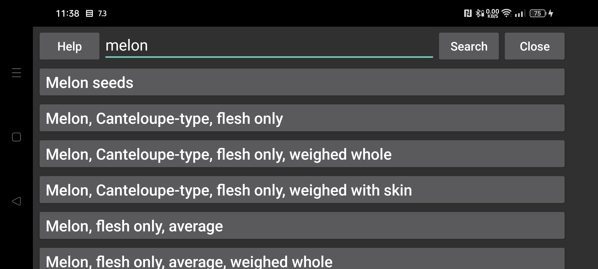

ar be de es fa fr hi it ja ko nl pl pt ru tr uk uz zh en
پایگاه دادهٔ ترکیبات غذایی
در این بخش میتوانید مواد غذایی را در مجموعهدادهٔ McCance and Widdowson’s The Composition of Foods Integrated Dataset 2021 جستوجو کنید: منبع داده.
برای جستوجو میتوانید از عبارت منظم (Regular Expression) استفاده کنید. مثلاً عبارت apple.*\braw\b^ مواردی را پیدا میکند که با apple شروع میشوند و سپس واژهٔ raw دارند. راهنمای عبارت منظم.
جستوجوی سادهٔ apple همهٔ مواردی را برمیگرداند که این واژه در آنها هست.